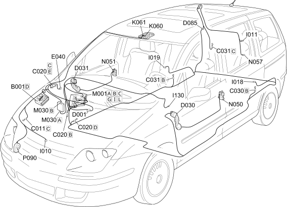

E7015 ALARM COMPONENT LOCATION
- Path
- Electrical equipment > 1 ELECTRICAL FUNCTIONS > E70 VEHICLE ELECTRONIC SYSTEMS > E7015 ALARM > E7015 ALARM COMPONENT LOCATION
- Kind
- topic
- Applies to
- engines: 2.0 16V JTD, 2.2 16V JTD; all production periods; only with equipment: MY 2005
- Interactive page
- https://sloeber94.github.io/elrnDB-fUlss/en/#/179009433
Applies to: engines: 2.0 16V JTD, 2.2 16V JTD; all production periods; only with equipment: MY 2005

Component code | Description | Reference to the assembly |
|---|---|---|
ENGINE COMPARTMENT JUNCTION UNIT | Op. 5,505A MULTIFUNCTION COMPONENTS | |
RIGHT FRONT EARTH | - | |
PASSENGER SIDE DASHBOARD EARTH | - | |
LEFT REAR EARTH | - | |
RIGHT REAR EARTH | - | |
FRONT/DASHBOARD COUPLING | - | |
DRIVER'S FRONT DOOR COUPLING | - | |
PASSENGER FRONT DOOR COUPLING | - | |
REAR/TAILGATE COUPLING | - | |
ALARM LED | - | |
BONNET RELEASE SWITCH | - | |
BOOT RELEASE SWITCH | ||
SWITCH ON LEFT REAR DOOR | - | |
SWITCH ON RIGHT REAR DOOR | - | |
VOLUMETRIC SENSORS DISABLING SWITCH | - | |
VOLUMETRIC SENSOR FOR LEFT ALARM | - | |
VOLUMETRIC SENSOR FOR RIGHT ALARM | - | |
BODY COMPUTER | Op. 5,505A MULTIFUNCTION COMPONENTS | |
ALARM CONTROL UNIT | - | |
LEFT FRONT DOOR LOCK GEARED MOTOR | - | |
RIGHT FRONT DOOR LOCK GEARED MOTOR | Op. 7005N FRONT DOOR CENTRAL LOCKING SYSTEM | |
BOOT LOCK GEARED MOTOR | - |
Topics linked from this page (23)
- 7015B TAILGATE LOCKING/OPENING DEVICES
- B001 ENGINE COMPARTMENT JUNCTION UNIT
- C011 RIGHT FRONT EARTH
- C020 PASSENGER SIDE DASHBOARD EARTH
- C030 LEFT REAR EARTH
- C031 RIGHT REAR EARTH
- D001 FRONT/DASHBOARD COUPLING
- D030 DRIVER'S FRONT DOOR COUPLING
- D031 PASSENGER FRONT DOOR COUPLING
- D085 REAR/TAILGATE COUPLING
- E040 ALARM LED
- I010 BONNET RELEASE SWITCH
- I011 BOOT RELEASE SWITCH
- I018 SWITCH ON LEFT REAR DOOR
- I019 SWITCH ON RIGHT REAR DOOR
- I130 VOLUMETRIC SENSORS DISABLING SWITCH
- K060 VOLUMETRIC SENSOR FOR LEFT ALARM
- K061 VOLUMETRIC SENSOR FOR RIGHT ALARM
- M001 BODY COMPUTER
- M030 ALARM CONTROL UNIT
- N050 LEFT FRONT DOOR LOCK GEARED MOTOR
- N051 RIGHT FRONT DOOR LOCK GEARED MOTOR
- N057 BOOT LOCK GEARED MOTOR